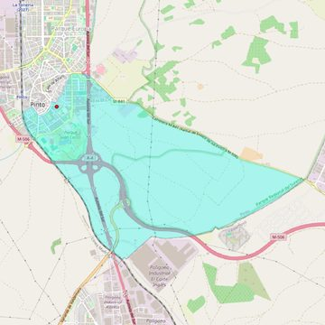

San José
- Arciprestazgo
- Valdemoro
- Población
- Pinto
- Dirección postal
- c/ Terreros, 8
- Código postal
- 28320
- Extensión
- 7,88 km² (788 ha)
- Teléfono
- 638 231 036
- Correo electrónico
- parroquiasanjose@gmail.com
- Información demográfica
- De la parroquia · De la población (Pinto) · Del arciprestazgo (Valdemoro)
- Resumen para imprimir
- La parroquia en una hoja (A4)


Descargar mapaLímites según decreto
“Partiendo de la confluencia de la autopista Madrid-Andalucía (A-4) con la carretera Pinto-San Martín de la Vega (M-506), arrancan por el eje de la autopista A-4 (en dirección norte); siguen por el eje de la entrada que desemboca en la plaza donde confluyen las calles Las Alpujarras, Cataluña y San Juan (en dirección noroeste), por el eje de las calles San Juan (en dirección suroeste), Infanta Isabel (en dirección suroeste), San Martín (en dirección noroeste), Avenida de España (en dirección suroeste), Pedro Faura (en dirección noroeste), Torrejón (en dirección suroeste), por el eje de las vías del ferrocarril Madrid-Alicante (en dirección sureste), por los límites de los términos municipales de Pinto-Valdemoro (en dirección noreste), por el eje de la carretera Pinto-San Martín de la Vega (M-506, en dirección noroeste) hasta la confluencia con autopista Madrid-Andalucía (A-4), punto de partida”. (B.O. Abril, 2007, pág. 453)
¿Algún dato de esta parroquia es incorrecto o ha cambiado? Comuníquenoslo.